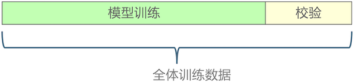
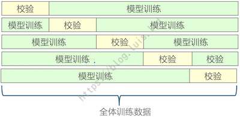
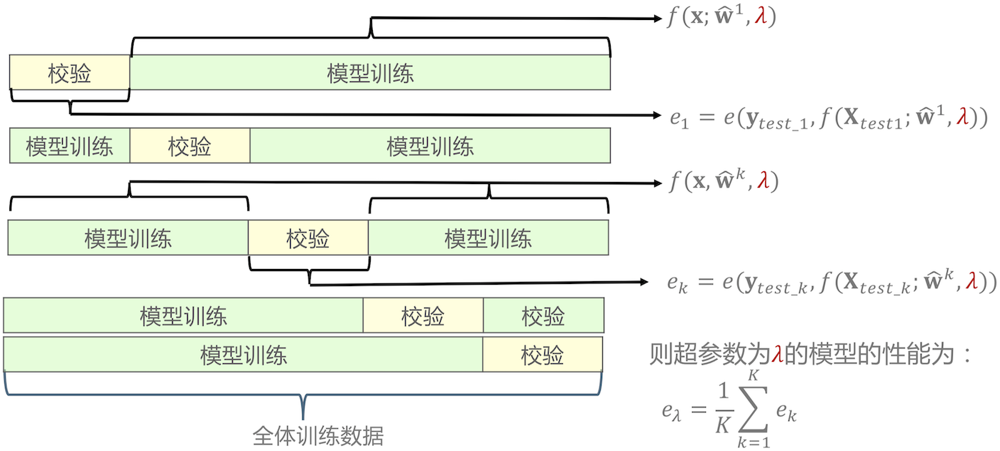
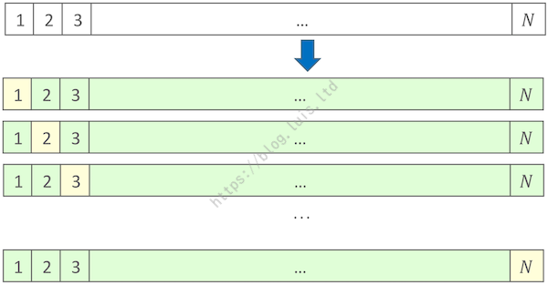

ML入门-交叉验证与模型选择
ML入门-交叉验证与模型选择
1. 模型的交叉验证
1.1 划分校验集
模型的评估不能在训练集上进行，而应该在新的测试数据上检验其 推广能力 / 泛化能力。但在实际任务中，测试数据往往是需要用来预测的数据，其标签是未知的，因此可以选择从全体训练数据中分离出一部分作为校验数据，不参与模型的训练：

当训练样本足够多时，划分剩下的训练样本仍足以训练出较好的模型时，即可采用这个方式。Scikit-Learn 中提供了划分校验集的功能：
1 | # class sklearn.model_selection.train_test_split |
*arrays: 需要划分的数据 (X, y)。sequence of indexables with same length / shape[0].Allowed inputs are lists, numpy arrays, scipy-sparse matrices or pandas dataframes.
test_size: 校验集大小。float, int or None, optional (default=None)If float, should be between 0.0 and 1.0 and represent the proportion of the dataset to include in the test split. If int, represents the absolute number of test samples. If None, the value is set to the complement of the train size. If train_size is also None, it will be set to 0.25.
train_size: 训练集大小。float, int, or None, (default=None)If float, should be between 0.0 and 1.0 and represent the proportion of the dataset to include in the train split. If int, represents the absolute number of train samples. If None, the value is automatically set to the complement of the test size.
random_state: 随机种子。int, RandomState instance or None, optional (default=None)If int, random_state is the seed used by the random number generator; If RandomState instance, random_state is the random number generator; If None, the random number generator is the RandomState instance used by np.random.
shuffle: 划分数据前是否洗牌。boolean, optional (default=True)Whether or not to shuffle the data before splitting. If shuffle=False then stratify must be None.
stratify: 分层抽样。array-like or None (default=None)If not None, data is split in a stratified fashion, using this as the class labels.
分层抽样主要用在分类数据类别样本不均衡的时候，如正负样本比例为 1 : 9，假设划 20% 作为校验数据，则分别对正样本和负样本各自划分 20% 作为校验数据再合并。
train_test_split还能在数据集较大时，用来分隔出小部分数据进行 EDA。
1.2 交叉验证
当训练数据比较少，或模型训练需要更多数据时（训练样本越多越好），直接分离校验集就不太好了，这时可使用 K 折交叉验证。
K 折交叉验证即：将全体训练样本等分为 K 份（若无法完全等分，多出来的部分都放进最后一份中），每次用 1 份数据作为校验集，余下 (K - 1) 份作为训练数据，重复 K 次：

该方法计算代价很高，但不会浪费太多数据，当样本数据集较少时有优势，K 常取 [3, 5, 10]。
Scikit-Learn 中实现了 K 折交叉验证 KFold：
1 | # class sklearn.model_selection.KFold |
n_splits: 交叉验证的折数 K，默认为 3。shuffle: 是否在划分数据之前对全体数据进行洗牌（打乱顺序）。random_state: 由随机数产生器产生的随机种子。当参数shuffle == True时用到。
当数据是分类数据时（标签 y 为类别），为保证每折中各个类别样本比例一致，Scikit-Learn 实现了分层（Stratified）的 K 折交叉验证 StratifiedKFold：
1 | # class sklearn.model_selection.StratifiedKFold |
StratifiedKFold 参数含义与 KFold 相同。
假设有一训练数据集如下表：
| 样本索引 | $x_1$ | $x_2$ | y |
|---|---|---|---|
| 0 | 1 | 2 | 0 |
| 1 | 3 | 4 | 0 |
| 2 | 1 | 2 | 1 |
| 3 | 3 | 4 | 1 |
K 折交叉验证中，校验验证通常用于 模型选择 / 超参数调优（评价不同超参数对应模型的性能）。交叉验证的步骤流程如下图：

Scikit-Learn 中实现两个了采用 K 折交叉验证评估模型性能的函数：cross_val_score 和 cross_validate：
1.2.1 cross_val_score
1 | # class sklearn.model_selection.cross_val_score |
estimator: 要训练的模型X, y: 全体训练数据groups: 数据的分组标识。通常假设数据是独立同分布（Independent Identical Distribution, IID），但在有些应用中如果数据生成过程依赖于样本的 groups，（如从多个患者收集医学数据，从每个患者身上采集多个样本。则每个样本的患者 ID 是其分组标识）。在这种情况下，想知道在一组特定的 groups 上训练的模型是否能很好地适用于未见过的 group 。因此，要确保验证数据的所有样本与对应的训练折中的数据没有相同的组。（Scikit-Learn 中有一整套与 groups 有关的校验验证实现）。
scoring: 评价指标。cv: 交叉校验划分策略。可为整数（交叉验证的折数 K）、交叉验证生成器的对象、产生 train / test 划分的迭代器对象。默认为None，采用3折交叉验证。输入类别数据时，自动采用分层抽样。n_jobs: 使用CPU的数目，-1 表示使用所有的CPU资源（与设置为 CPU 核的数目效果相同）。verbose: 日志冗长度。- 0：不输出训练过程
- 1：偶尔输出
- $> 1$：对每个子模型都输出
fit_params: estimator 的fit()函数需要的参数。pre_dispatch: 控制并行计算中预派遣的任务数。根据设备条件（内存大小）设置。例如 12 折 CV 任务，且
n_jobs = 3。- 当该参数不设置时，程序一次性将所有并行任务派遣给 CPU，则 3 个 CPU 各获得 4 份 CV 训练数据集和 4 份 测试数据集，并存放在内存中，各个 CPU 则按顺序训练，此时内存占用最高，但由于提前一次性将所有数据分配完毕，开始训练后的等待时间最小。
- 当设置
pre_dispatch='1*n_jobs'时，本例中即pre_despatch == 3，则程序每次只为 3 个 CPU 各分配一份数据，分配后 CPU 立即开始训练，训练完成后再次分配，此时内存占用最低，但由于每次训练完后才分配数据，开始训练后的等待时间最长。 - 当设置
pre_dispatch='2*n_jobs'时，本例中即pre_despatch == 6，则 3 个 CPU 各获得两份 CV 训练数据（一份即时训练，另一份在队列中等待）并存储在内存中，当某个 CPU 训练完一份 CV 数据后，程序再分配下一份数据，直到所有数据均被分配完毕。通常这种设置的综合效果最佳。
1.2.2 cross_validate
1 | # class sklearn.model_selection.cross_validate |
return_train_score: 是否包含训练得分。默认 ‘warn’ 表示真，包含训练得分。计算训练得分可以通过训练得分和校验得分查看模型在过拟合状态还是欠拟合状态。但是训练得分较慢，且不计算也不影响模型 的最佳参数选取（最佳参数只看校验得分），后续版本可能将缺省值设为
False。其他参数与
cross_val_score相同。
使用 cross_validate 可以输出训练集和校验集上的分数，从而判断是否处于欠拟合或过拟合的状态。
1.3 特殊的交叉验证
1.3.1 留一交叉验证
特别地，当交叉验证的折数与样本数相等时（$K = N$），因为每次仅留出一个样本做校验，因此称为留一交叉验证。由于折数更多，通常进行时间也更长，一般仅在样本数非常少的时候使用。
但对于线性模型，可以采用广义交叉验证（Generalized Cross Validation, GCV）来近似留一交叉验证，极大降低交叉验证的计算量。Scikit-Learn 中实现了基于 GCV 的线性模型，如：RidgeCV, LassoCV, LogisticRegressionCV 等。其流程大致如下图：

1.3.2 自助法（Bootstrap）
交叉验证（包括留一交叉验证）均为无放回采样，一个实例仅能被选择一次。而 Bootstrap 是有放回采样，假设数据集中有 N 个样本，每次有放回地从数据集中抽取一个样本，共采样 N 次。一个 Bootstrap 样本有 N 个样本，其中很可能存在重复数据。由于每个样本被采样的概率为 $\dfrac {1} {N}$，则不被采样的概率为 $1 - \dfrac {1} {N}$，因此一个 Bootstrap 的 N 个样本中，某个样本点不被采样的概率为 $(1 - \dfrac{1} {N})^N \approx 0.368$，也即一个 Bootstrap 样本中只包含了全体训练集中约 $63.2 \%$ 的数据（K 折交叉验证每次包含 $1 - \dfrac {1} {K}$ 的训练数据），因此也称为“0.632 自助法”。
1.3.3 特殊的校验验证
通常，训练数据假设是独立同分布的（Independent Identical Distribution, IID）。
但在实际任务中，有时样本时使用与时间相关的过程生成的，也即样本间存在时序关系，样本与各自的时序强相关，例如股票的价格等，此时使用 time-series aware cross-validation scheme 更安全。
同样，如果知道数据生成过程中具有分组结构（group structure），例如从不同 subjects、不同实验、不同测量设备收集的样本等，则使用 group-wise cross-validation 更安全。
2. 超参数调优
Scikit-Learn 中实现了基于交叉验证的模型超参数调优方法 GridSearchCV：
1 | # class sklearn.model_selection.GridSearchCV |
param_grid: 待评价参数（可以多个超参数一起调优：grid）。X, y: 全体训练数据。iid: 样本是否是独立同分布。refit: 评价指标。是否在找到最佳超参数后用全体训练数据再次训练模型参数。
error_score: 训练失败的处理
总结来说，K 折交叉验证可以检验超参数对应的模型的性能，配合网格搜索 GridSearchCV 可以遍历一段取值范围内的超参数 $\lambda$ 并找到模型效果最好时的超参数 $\lambda^{\ast}$，再选定该超参数，使用全体训练数据再次训练模型，得到最佳模型参数 $W$，最终模型为 $f(X;W, \lambda^{\ast})$ 。